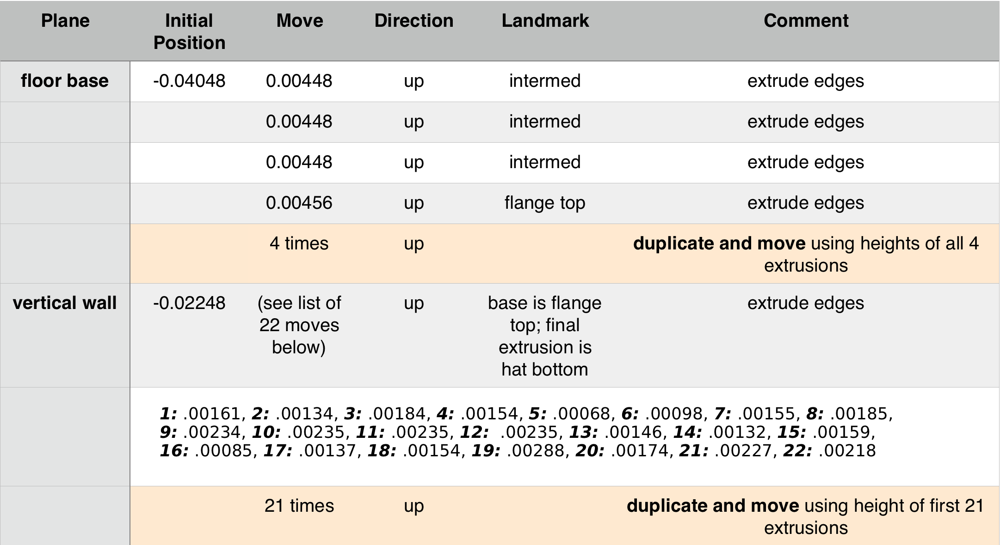
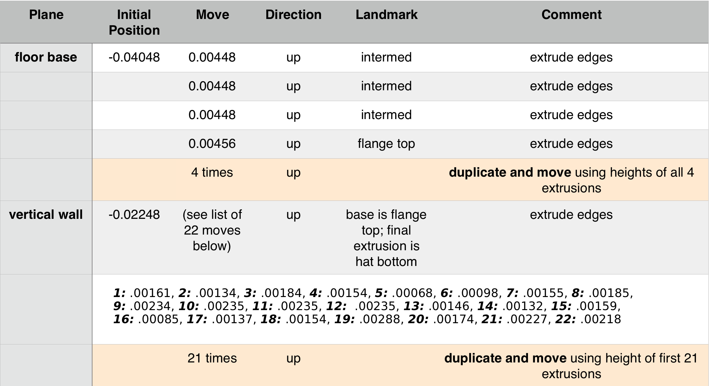

Demo 8
This object is a specialized pipe fitting. It resides in the INRIA model repository as a .3ds file, and is imported into Blender with Blender ' s .3ds import script. Its title is “DEMO10” (See References). We apply the mesh command Tris to Quads and then Limited Dissolve at a level of 8 degrees.
This object is a specialized pipe fitting. It resides in the INRIA model repository as a .3ds file, and is imported into Blender with Blender ' s .3ds import script. Its title is “DEMO10” (See References). We apply the mesh command Tris to Quads and then Limited Dissolve at a level of 8 degrees.
In a top wireframe view we get an ‘x-ray’ look at the model. The perpendicularity of the geometry checks out good, but the quad angles of the faces making up the horizontal pipe are irregular and the horizontal pipe will be rebuilt. Notice that in the model as shown both i.d. and o.d. of the horizontal tube penetrate. However, for finite element mesh purposes it is not necessary for the o.d. to do so.
An early version of the ‘hat’ plate is shown. Where symmetry exists, mirroring saves work.
Our main challenge will be building the mesh in the area of the horizontal penetration. Of the 24 divisions in the horizontal pipe section, some will be incorporated vertically, and some horizontally. The elements in the vertical tube wall are divided repeatedly to adapt the area of integration in way of the penetration.
New circles are made and saved separately. It is necessary for the circles to be separate objects in order to use the Knife Project tool. Also, before cutting the inner surfaces, it may be necessary to hide the new faces created by the OD cutting circle in order to give the ID cutting circle “room to work”. The floating set of circles will be joined and eventually form the boundary end of the horizontal pipe. Before that happens, they make useful reference shapes, frequently referred to by pressing the ‘1’ key to see the front view.
As an experiment, we make two single elements in Blender with the same general body taper of 28 degrees. One element is a wedge with a nose, and the other a diamond. Gmsh splits them into four. Then we view their Scaled Jacobian values in Paraview. Notice the disparity of scores. The option of
installing a nose is worth remembering for those situations in which it will work
.
 


The various extrusion steps are summarized. In comparison to the work associated with meshing the penetration area, the extrusions are negligible in terms of the time they require. Note that the coordinate numbers are all extremely small. Blender can work comfortably on a very small scale, if the model happens to be so constructed. However, it can have undesirable repercussions, for example when removing doubles.
The model at the time of the start of the extrusion steps is shown.
The double arc of quads which forms the base will serve for two extrusion steps, the outer elements becoming deselected when the upper extrusion is performed.
Note that we choose to save final mirroring until last. However, it is not necessary to do it this way.
The double arc of quads which forms the base will serve for two extrusion steps, the outer elements becoming deselected when the upper extrusion is performed.
Note that we choose to save final mirroring until last. However, it is not necessary to do it this way.
At right is shown the quarter cylinder detail in way of the lower half of the pipe penetration. (Here light gray in color.) The interior diameter of the body circle (red) has been extruded to form a check curve, and the points of the workpiece i.d. are snapped to it to insure fidelity of location.
The 24-division circle geometry convention yields actual radii, in this case, varying between 0.02132 and 0.0215, due to the ‘flats’ and ‘corners’ of the circle. As it is not possible to follow the abrupt bends in the template surface exactly when constructing freeform elements, the valid canon will be to maintain all points within the range of the radii noted above.
More details about using snapping in Blender will be given in Demo 22.
The 24-division circle geometry convention yields actual radii, in this case, varying between 0.02132 and 0.0215, due to the ‘flats’ and ‘corners’ of the circle. As it is not possible to follow the abrupt bends in the template surface exactly when constructing freeform elements, the valid canon will be to maintain all points within the range of the radii noted above.
More details about using snapping in Blender will be given in Demo 22.
The final mesh meets the Verdict quality standards for both Scaled Jacobian (right) as well as for Diagonal measure (below).
The final mesh contains 4094 elements and 6466 nodes.